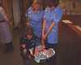
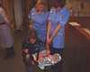

16th December 2001
19th October 2001
18th October 2001
17th October 2001
16th October 2001
15th October 2001
14th October 2001
Poppy has been home for 2 months now. She recently had to go back into hospital for a few days when she had Bronchiolitis - this made her breathing very difficult and she required oxygen. She is now slowly recovering at home. She started having solid food about a week ago and is growing fast. This is Poppy's first night sleeping in the same room with Aeryn. A big step forward. In the last week she has started playing with toys and using her hands. She has also started smiling.

Poppy has had a relaxing day today - although she was up quite a lot during the night (waking up Aeryn in the process...). We are beginning to get to know each other and establish a routine, but we have a way to go yet. We have discovered she finds darkness and quiet hard to deal with after being in the hospital; she is more than happy to drop off in front of the television! We would like once again to thank everyone who has shared our ups and downs for your support - it has been very beneficial to us to sit down at the end of each day and think about all that has happened and focus it into a few words to explain what has happened to our friends - and also to those of you we've never met.


Today has been much better as we have all been settling into our new routine. Poppy slept well last night and only woke up once for a feed. She has been awake a lot today and seems to enjoy company - she won't go to sleep if she is on her own.

Poppy is finding the transition to being at home quite difficult today - as are we. We are both exhausted after juggling two babies all day - hopefully things will settle down soon! We have decided to stop updating the website at the end of the week, but it will still be online.


Today is the big day! Poppy finally came home this morning after nearly four and a half months in the Neonatal unit. Everyone wished her well and we will take her back on coffee mornings so they can watch her progress. We are extremely grateful to everyone on the unit who has looked after Poppy and ourselves. So begins the next chapter in Poppy's life.
We will continue to update the website daily until the end of the week, but its future after that is as yet undecided. Comments?
 


Poppy is still expected to go home tomorrow. She now weighs 6lb 15oz and had a quiet day today.
Poppy has spent a quiet day in the unit today. She continues to do well and has not suffered any ill effects from the immunisations. We have been told the machinery to discharge her will grind into action tomorrow, so she should be clear to go home on Tuesday.